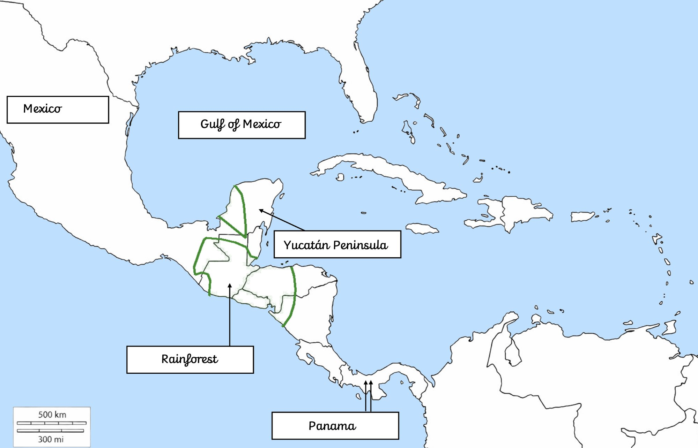

Whole Class Recap · Year 4 · Geography
Where Did the Maya Live? — Physical Features
↺ Restart

Chichén Itzá
Tulúm
Yucatán Peninsula
Southern Lowlands
Guatemalan Highlands
Pacific Coastal Plain
Usumacinta River
Lake Petén Itzá
Cenotes
Gulf of Mexico
Caribbean Sea
Question 1 of 9
◆ Explanation
← Back
Reveal answer
Next →
🌎
Recap complete!
Physical features covered today:
↺ Play again